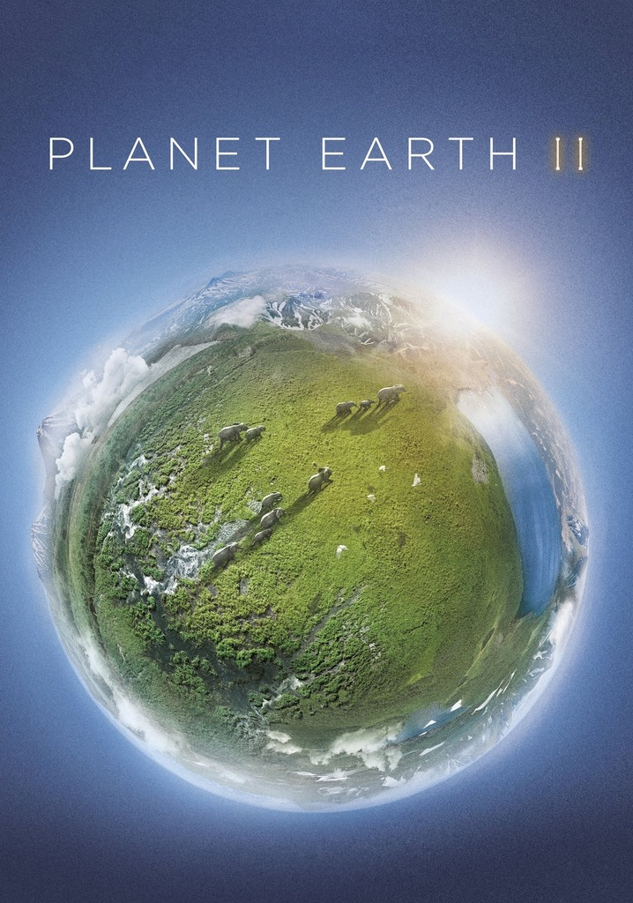
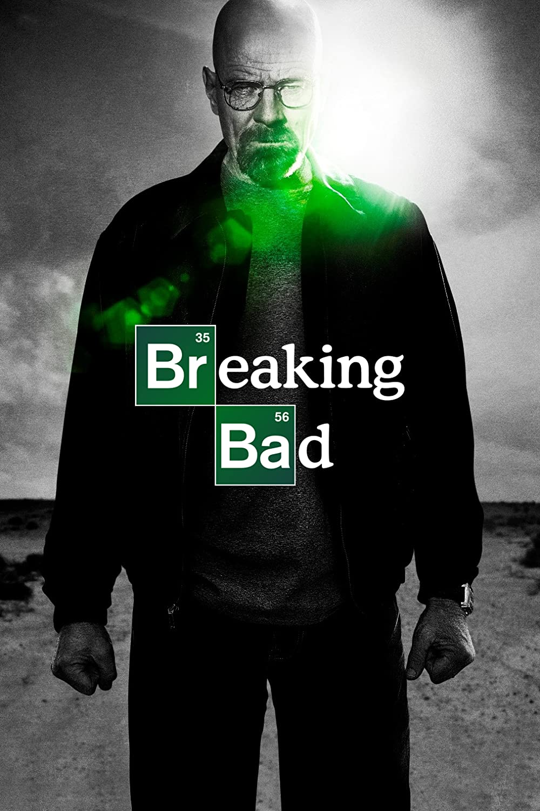
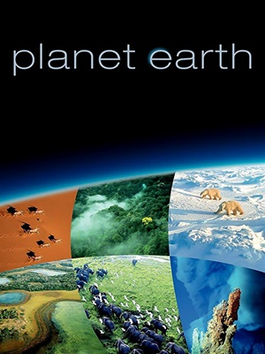
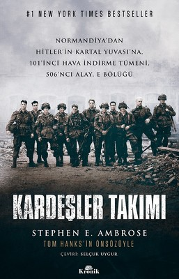

IMDb Değerlendirmesi 9.5/10
David Attenborough, çeşitli habitatlardaki yaşamı gösteren yeni bir vahşi yaşam belgeseliyle geri dönüyor.
BELGESEL
IMDb Değerlendirmesi 9.5/10
Ameliyat edilemez akciğer kanseri teşhisi konan bir lise kimya öğretmeni, ailesinin geleceğini güvence altına almak için metamfetamin üretip satmaya başlar.
SUÇ DRAM GERİLİM
IMDb Değerlendirmesi 9.4/10
Emmy Ödüllü, 11 bölümden oluşan, yapımı beş yıl süren, BBC tarafından sipariş edilen en pahalı doğa belgeseli dizisi ve yüksek çözünürlükte çekilen ilk doğa belgeseli.
BELGESEL
IMDb Değerlendirmesi 9.4/10
ABD Ordusu 101. Hava İndirme Tümeni'nin Easy Company'nin hikayesi ve Overlord Operasyonundan VJ Day'e kadar İkinci Dünya Savaşı Avrupa'daki misyonları.
DRAM TARİH SAVAŞ
IMDb Değerlendirmesi 9.4/10
Nisan 1986'da Sovyet Sosyalist Cumhuriyetler Birliği'ndeki Çernobil nükleer santralinde meydana gelen patlama, dünyanın en kötü insan kaynaklı felaketlerinden biri haline geldi.
DRAM TARİH GERİLİM